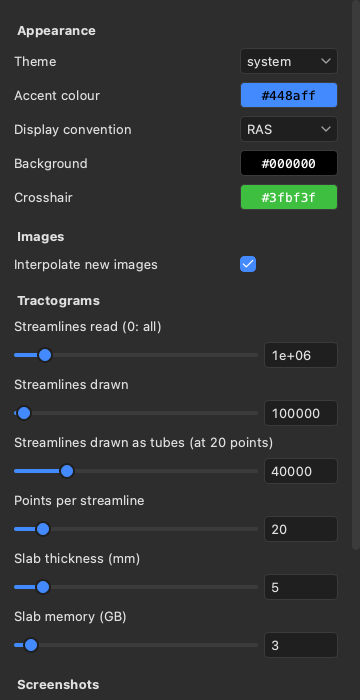

Settings#
The Settings panel holds the viewer’s preferences, such as its colours, how many streamlines it reads and draws, and whether it serves agents. Open it with Settings > Settings, with the gear icon on the right, or with Ctrl+, (Cmd+, on macOS). A change applies at once and is saved, so the viewer starts with it next time.

Appearance#
Theme is system, light or dark. System follows the computer’s light or dark mode, also when it changes.
Accent colour is the one colour in the panels. It marks the selected item, the focused field, the selected view, checked boxes and sliders.
Display convention is RAS, which puts the subject’s right on the right of the screen, or LAS, which puts it on the left (see The 2D views).
Background and Crosshair set the colour behind the images in the views and the crosshair’s colour.
Images#
Interpolate new images chooses whether images opened from now on start smooth (trilinear) or blocky (nearest voxel).
Tractograms#
Streamlines read (0: all) is the most streamlines read from a tractogram file. A file with more streamlines is reduced to a random subset of this size when read.
lar bv --max-streamlinessets its own limit.Streamlines drawn is the most streamlines drawn of each tractogram, whatever the size of its subset.
Streamlines drawn as tubes (at 20 points) limits the tubes that the 3D view draws for a tractogram set to tubes (see Tractograms). The number counts streamlines of 20 points, so streamlines with more points allow fewer tubes: at 200 points, a tenth as many. Past the limit, the 3D view draws lines.
Points per streamline is how many points each streamline of a new tractogram keeps. More points follow the curves better but draw more slowly.
Slab thickness (mm) is the slab that new tractograms start with. The 2D views show only the streamlines within this slab around the slice.
Slab memory (GB) is the memory that the 2D views’ slabs may take. Past it, the slabs are cut in a slower way.
Screenshots#
Screenshot scale, Information overlay in screenshots and Transparent screenshots set the values that the Screenshots panel starts with: how many image pixels each screen pixel becomes, whether the views’ labels and colour bars are included, and whether the background is transparent instead of the views’ colour (see Screenshots).
Phantom editor#
Phantom editor layout is either guided, which shows the steps to a first simulation one at a time, or all, which shows every section of the editor at once (see Phantoms). The switch at the top right of the editor changes it too.
Graphics#
Lower resolution while moving draws the views at half resolution while you drag or scroll, then once at full
resolution when you stop. It is off by default. Turn it on when the viewer runs on a remote display, such as over
ssh -X, where sending each image to your screen is the slow part.
On a computer with several GPUs, GPU chooses the one the viewer draws with. It applies when the viewer starts again.
Agents (MCP)#
An agent, such as Claude Code, can drive the viewer through MCP, the Model Context Protocol; Driving the viewer from an agent shows how to connect one.
Port is where the viewer serves agents, on this computer only. It is 8765 by default, and
lar bv --mcp-portsets its own.Serve agents starts or stops the server. It is off when the viewer starts, unless the viewer was started with
lar bv --mcpor--mcp-port.URL and Token are what an agent needs to connect, each with a Copy button. New token replaces the token, and agents with the old one are then refused. The token is kept in the file
mcp-token, beside the settings, and only you can read it.
The settings are saved in viewer.toml, in ~/Library/Application Support/larmor on macOS,
~/.config/larmor on Linux (or under $XDG_CONFIG_HOME), and %APPDATA%\larmor on Windows.